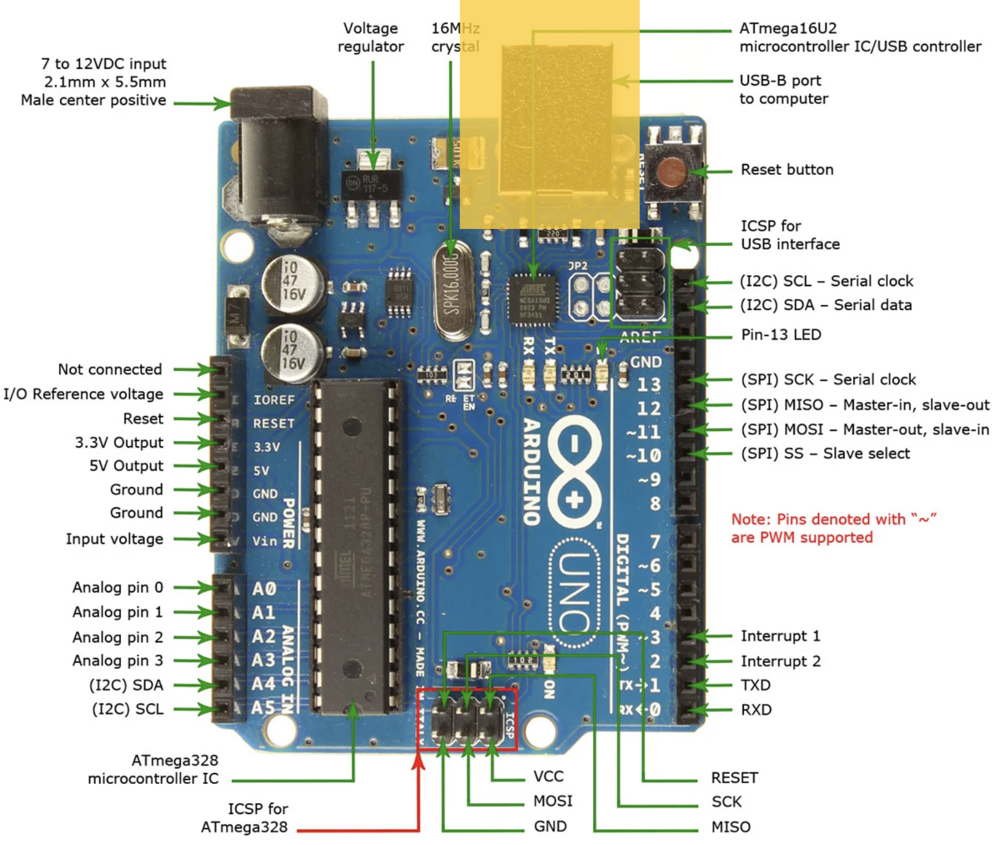
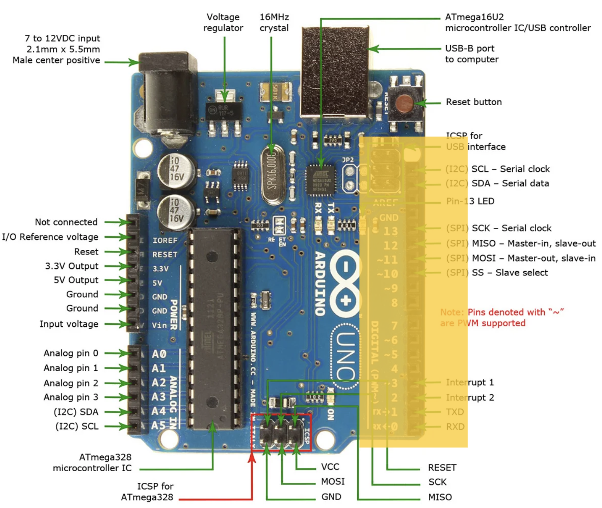
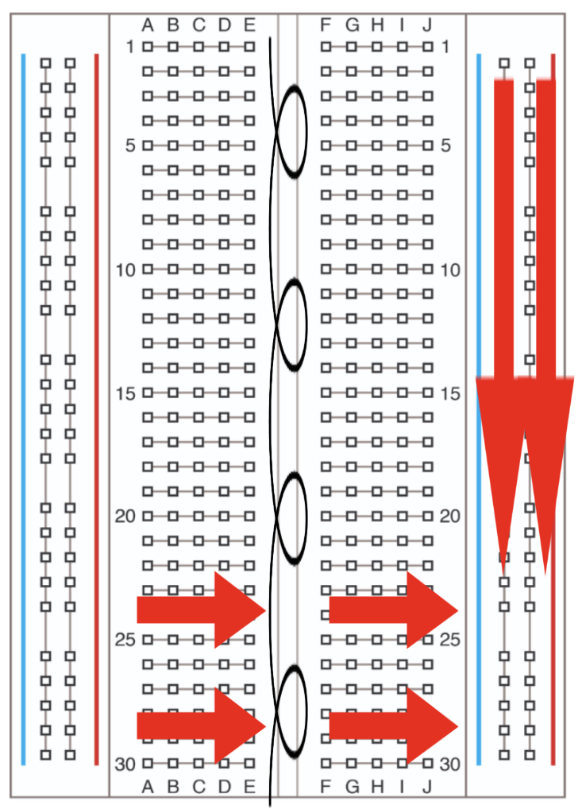

Motors and Arduino for Robotics
Week 2 • CMPSC 304 Robotic Agents
Press Space or → to advance
Today's Agenda
- Arduino Uno basics and power flow
- Digital vs. Analog signals
- Pulse Width Modulation (PWM)
- Battery voltage calculations
- Why we need motor drivers
- DC motors for Project 1
- Motor types overview
Arduino Uno Overview
USB Connection
- USB-B port connects Arduino to your computer
- Used to upload code to the Arduino microcontroller
- Powers the Arduino during programming
- Enables serial communication for debugging
Digital Pins
- Left side: Digital input/output pins (0-13)
- Pins can be HIGH (5V) or LOW (0V)
- Outputs: Turn on an LED every 10 seconds to make it blink
- Inputs: Read sensor data (e.g., is surface wet or dry?)
- Pins with ~ symbol: Support PWM (Pulse Width Modulation)
- PWM pins: 3, 5, 6, 9, 10, 11
Analog Pins

- Bottom right: Analog input pins (A0-A5)
- Can read a range of values (0-1023)
- Perfect for sensors with continuous output
- Examples: Distance sensors, light sensors, temperature sensors, potentiometers
Power Pins

- Top left: Power and ground connections
- 5V pin: Provides 5 volts (HIGH)
- 3.3V pin: Provides 3.3 volts (for sensitive components)
- GND pins: Ground/reference voltage (LOW, 0V)
- Vin: Input voltage (7-12V recommended)
- Circuits flow from GND to HIGH to complete the circuit
Digital vs. Analog Signals
Digital Signals
- Like a light switch: ON or OFF
- Arduino digital pins (0-13)
- Perfect for: LEDs, buttons, relays
digitalWrite(13, HIGH)
Analog Signals
- Like a dimmer switch: infinite positions
- Arduino reads 0-1023 values
- 0 = 0V, 1023 = 5V, 512 ≈ 2.5V
analogRead(A0)
Pulse Width Modulation (PWM)
Problem: Arduino digital pins are only HIGH or LOW
Question: How do we get "in-between" voltages?
Answer: PWM = rapidly switching between HIGH and LOW!
How PWM Works
Pulse Width Modulation = varying the duty cycle
- Switch HIGH/LOW very fast (490-980 Hz)
- Duty Cycle = % of time signal is HIGH
- Motor "sees" the average voltage
Examples:
- 25% duty cycle ≈ 1.25V average
- 50% duty cycle ≈ 2.5V average
- 75% duty cycle ≈ 3.75V average
- 100% duty cycle = 5V (always HIGH)
PWM on Arduino
PWM pins (marked with ~): 3, 5, 6, 9, 10, 11
analogWrite(9, 0); // 0% duty cycle = 0V (motor stopped)
analogWrite(9, 64); // 25% duty cycle = 1.25V (slow)
analogWrite(9, 128); // 50% duty cycle = 2.5V (medium)
analogWrite(9, 191); // 75% duty cycle = 3.75V (fast)
analogWrite(9, 255); // 100% duty cycle = 5V (full speed)Why PWM for Motors?
- ✓ Efficient: Transistors fully ON or OFF (minimal heat)
- ✓ Simple: No complex voltage regulation needed
- ✓ Precise: 256 speed levels (0-255)
- ✓ Works with digital pins: No true analog output needed
Battery Voltage: 4 AA Batteries
Question: Yellow DC motor kit comes with 4 AA battery holder. What voltage is this?
How Do We Know?
Step 1: Check battery specifications
- Standard AA alkaline battery = 1.5V nominal
- Rechargeable NiMH AA = 1.2V nominal
Step 2: Batteries in series ADD voltages
- 4 batteries × 1.5V each = 6V total
- (Or 4 × 1.2V = 4.8V for rechargeable)
Series vs. Parallel Batteries
Series (end-to-end): Voltages ADD
- (+) → Battery 1 → Battery 2 → Battery 3 → Battery 4 → (−)
- Total: 1.5V + 1.5V + 1.5V + 1.5V = 6V
- Capacity stays same (e.g., 2000 mAh)
Parallel (side-by-side): Capacity ADDS
- All (+) terminals connected, all (−) connected
- Voltage stays 1.5V
- Capacity: 2000 + 2000 + 2000 + 2000 = 8000 mAh
Battery Voltage Over Time
| Battery State | Alkaline AA | Your 4× AA Pack |
|---|---|---|
| Fresh | 1.5V - 1.6V | 6.0V - 6.4V |
| Nominal | 1.5V | 6.0V |
| 50% used | 1.3V | 5.2V |
| Depleted | 1.0V | 4.0V |
Why We Need Motor Drivers
Critical Problem: Arduino pins cannot directly power motors!
Arduino Pin Limitations
Arduino Digital Pin
- Max current per pin: 40 mA
- Recommended: 20 mA
- Max voltage: 5V
Your Yellow DC Motor
- Operating current: 150-300 mA
- Stall current: 1-2 A
- Voltage: 3-6V
What Happens Without a Driver?
✗ Scenario 1: Connect motor directly to Arduino pin
- Arduino pin tries to supply 150+ mA
- Pin is rated for only 20-40 mA
- Result: Damaged Arduino! (burned pin or entire chip)
✗ Scenario 2: Motor stalls (gets stuck)
- Current spikes to 1-2 A
- Result: Permanent damage to Arduino!
Motor Driver to the Rescue!
Motor Driver = Power transistor bridge controlled by low-current signals
How it works:
- Arduino sends LOW-CURRENT control signals (< 20 mA)
- Motor driver switches HIGH-CURRENT from battery (1-2 A)
- Motor gets power from battery, NOT Arduino
- Arduino stays safe!
Motor Driver Functions
- ✓ Current amplification: Arduino controls, battery powers
- ✓ Direction control: H-bridge reverses current flow
- ✓ Speed control: PWM from Arduino → PWM to motor
- ✓ Protection: Some drivers have overcurrent protection
- ✓ Isolation: Keeps motor noise away from Arduino
Breadboard Basics
- Solderless prototyping platform
- Horizontal rows: Connected internally (for components)
- Vertical rails: Connected vertically (for power/ground)
- Red rail: Typically connected to positive voltage (5V)
- Blue/Black rail: Typically connected to ground (GND)
- Center gap: Separates two sides, perfect for ICs
DC Motors for Project 1
Yellow Geared DC Motors
- Type: Brushed DC motor with gear reduction
- Voltage: Typically 3-6V (perfect for 4× AA = 6V!)
- Application: Wheeled robot car (differential drive)
- Power: Comes with 4× AA battery holder (6V, ~2000 mAh)
- Characteristics:
- High speed reduced by internal gears
- Increased torque for moving robot weight
- Simple two-wire control (polarity determines direction)
- Current draw: 150-300 mA running, 1-2A stall
Motor Driver: L298N
- Purpose: Controls motor speed and direction
- H-Bridge configuration: Allows bidirectional control
- Specifications:
- Drives 2 DC motors independently
- Up to 2A per channel
- Logic voltage: 5V (from Arduino)
- Motor voltage: 5-35V (from battery)
- Control:
- IN1/IN2 pins control Motor A direction
- IN3/IN4 pins control Motor B direction
- ENA/ENB pins control speed (PWM)
Alternative Motor Drivers
TB6612FNG
- More efficient than L298N
- Lower voltage drop
- Up to 1.2A per channel
- Better for smaller motors
WWZMDiB Motor Driver
- Compact design
- Integrated motor control
- Good for space-constrained projects
Types of Electric Motors
- Brushed DC Motors (what you're using)
- Brushless DC Motors
- Stepper Motors
- Servo Motors
Brushed DC Motors
Mechanism
Commutator switches current direction via brushes
Advantages
- Simple control (voltage → speed)
- Inexpensive
- Wide availability
Disadvantages
- Brush wear over time
- Lower efficiency due to friction
- Maintenance required
Brushless DC Motors
Mechanism
Electronic commutation (no brushes)
Advantages
- Higher efficiency
- Longer lifespan
- More torque per weight
- Less maintenance
Disadvantages
- Requires ESC
- More expensive
- Complex control
Applications: Drones, RC cars, industrial robots
Stepper Motors
Mechanism
Precise rotation in fixed steps (e.g., 1.8° per step)
Advantages
- Precise position control without encoder
- Hold position when powered
- Predictable movement
Disadvantages
- Lower top speed
- Can lose steps under high load
- Requires specific driver
Applications: 3D printers, CNC machines, robotic arms
Servo Motors
Components
DC motor + gears + encoder + controller
Types
- Standard: 0-180° rotation
- Continuous: 360° rotation with speed control
- Digital: Faster response, more torque
Advantages: Built-in position control, easy to use (single signal wire), compact package
Applications: RC vehicles, robotic arms, grippers
Other Actuation Technologies
Hydraulic Actuators
- Mechanism: Pressurized liquid in pistons
- Advantages: Very high force
- Disadvantages: Large, expensive, maintenance-intensive
- Applications: Construction equipment, large legged robots
Pneumatic Actuators
- Mechanism: Compressed air
- Advantages: Lightweight, safe, compliant
- Disadvantages: Lower force than hydraulics
- Applications: Soft robotics, grippers, robotic fish
Safety Considerations
Active Safety
- Torque limiting: Monitor motor current
- Collision detection: Compare expected vs actual torque
- Emergency stop: Cut power immediately
Passive Safety
- Mechanical limits: Physical stops on motion
- Compliant mechanisms: Springs, flexible materials
- Fail-safe brakes: Engage when power lost
- Current limiting: Fuses and circuit breakers
Motor Selection Criteria
For your wheeled robot, consider:
- Torque: Can it move your robot's weight?
- Speed: How fast should it go?
- Voltage: Match your power supply (typically 5-6V)
- Current: Does your driver/battery support it?
- Size/Weight: Fits your chassis design
- Cost: Within project budget
Next Steps for Project 1
- This week: Mechanical build, wiring, power setup
- Install fresh batteries (4× AA = 6V)
- Test motors individually before mounting
- Verify motor driver connections (common mistake: reversed polarity)
- Start with low PWM values (50-100) to test safely
- Check battery voltage regularly (should read ~6V when fresh)
- Document your wiring (take photos!)
Key Takeaways
- Digital = ON/OFF; Analog = range of values; PWM = fake analog using fast switching
- 4× AA batteries in series = 6V (1.5V each)
- Arduino pins (20-40 mA) cannot power motors (150-300 mA) directly
- Motor drivers amplify control signals and protect Arduino
- DC motors offer simple speed control via PWM (0-255)
- Different motor types trade off precision, force, speed, and cost
Questions?